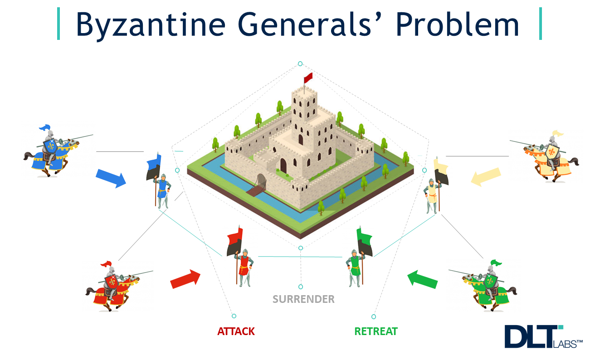

The Byzantine's General Problem
Bitcoin is set out to be the first network to be able to provide a distributed ledger. What does that mean? Well here is a quick rundown.
The picture is an example of The Byzantine General's Problem. This age old question seeks if multiple Byzantine generals that surround Byzantium are able to decide when to attack as a group, they will only win if they are able to attack simultaneously, otherwise they lose the war. In blockchain, this means that a network of nodes simply asks for a consensus of an action by a group separarted by distance, without the help of a trusted central party.
The problem that the General's face, is that any of the communications that they send or received can be fasle, untrusted, or decepted since there are no secure channels for them to exchange information. They also suspect that certain generals are traitors. This problem was solved with the implentation of a consensus algorithm, this allowed for nodes to work together to efficiently update the ledger, which means that the generals had to adopt a procedure when they are making a choice and faced with uncertainty.
This is how Bitcoin was able to deploy a blockchain solution, where it is able to have a layer that can be trusted without needing to trust every individual. A network comes together and agrees on the truth before it is recorded, if one node is unsure about the information, the other nodes can verify it with the information that they have present, then the verfied information is sent to all other nodes for recordkeeping. This allows for Bitcoin to create a trustless monetary system without the need for a centralized authority.
So the answer is: yes.
Sources: